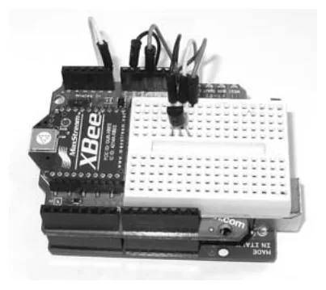
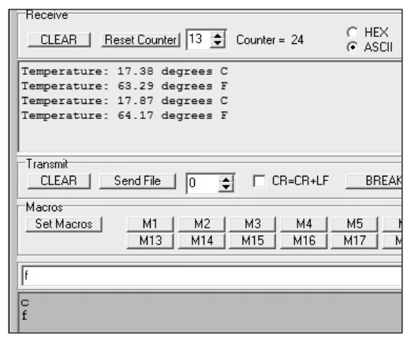

In this project, you’ll build a remote control thermometer that returns the temperature upon request from your computer. In the process, you’ll learn the basics of remote-sensor data retrieval and create a base for use with other projects that involve remote sensing.
The Hardware
The following hardware is required:
- Arduino and USB cable
- One TMP36 temperature sensor
- Two XBee (Series 1) modules
- One XBee Arduino shield
- One XBee Explorer board and USB cable
- Various connecting wires
- A 9 V battery and DC socket cable (as used in Chapter 12)
- One breadboard
The Layout
Insert one XBee into the shield; then connect the shield to the Arduino board. Use the small solderless breadboard to hold the TMP36 and add wires to 5 V, GND, and A0 on the XBee shield (as with Project 8), as shown in Figure 14-12.

The USB Explorer board and the other XBee will be connected to the PC after you upload the following sketch to your Arduino board.
The Sketch
Enter and upload the following sketch:
// Project 49 - Building a Remote Control Thermometer
char a;
float voltage=0;
float sensor=0;
float celsius=0;
float fahrenheit=0;
float photocell=0;
void setup()
{
Serial.begin(9600);
}
void sendC()
{
sensor=analogRead(0);
voltage=((sensor*5000)/1024);
voltage=voltage-500;
celsius=voltage/10;
fahrenheit=((celsius*1.8)+32);
Serial.print("Temperature: ");
Serial.print(celsius,2);
Serial.println(" degrees C");
}
void sendF()
{
sensor=analogRead(0);
voltage=((sensor*5000)/1024);
voltage=voltage-500;
celsius=voltage/10;
fahrenheit=((celsius*1.8)+32);
Serial.print("Temperature: ");
Serial.print(fahrenheit,2);
Serial.println(" degrees F");
}
void getCommand()
❶ {
Serial.flush();
while (Serial.available() == 0)
{
// do nothing until data arrives from XBee
}
while (Serial.available() > 0)
{
a = Serial.read(); // read the number in the serial buffer
}
}
void loop()
{
getCommand();// listen for command from PC
❷ switch (a)
{
❸ case 'c':
// send temperature in Celsius
sendC();
break;
❹ case 'f':
// send temperature in Fahrenheit
sendF();
break;
}
}First, the sketch listens to the serial line using the function getCommand() at ❶. It will loop around until it receives a character, at which point it stores that character in variable a. Once the character has been received, it is interpreted using the switch-case function at ❷. If the letter c is received, the function sendC() at ❸ calculates the temperature in Celsius, writes it to the serial line, and then sends the temperate to the host PC via the XBees. If the letter f is received, sendF() at ❹ calculates the temperature in Fahrenheit and sends it back to the PC.
Operation
Run the Terminal program, as you did earlier in this chapter, and then send out a c or an f. The temperature should be returned in about 1 second and should look similar to the results shown in Figure 14-13.
